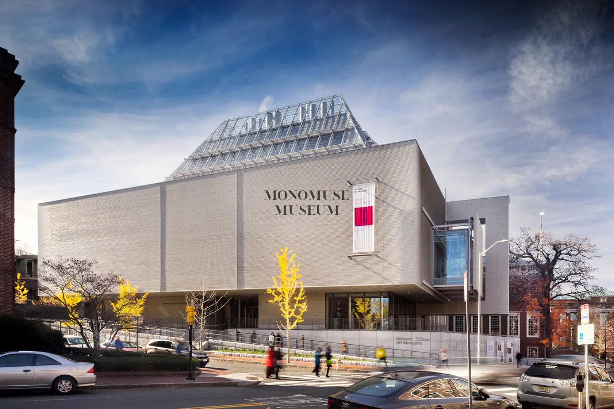
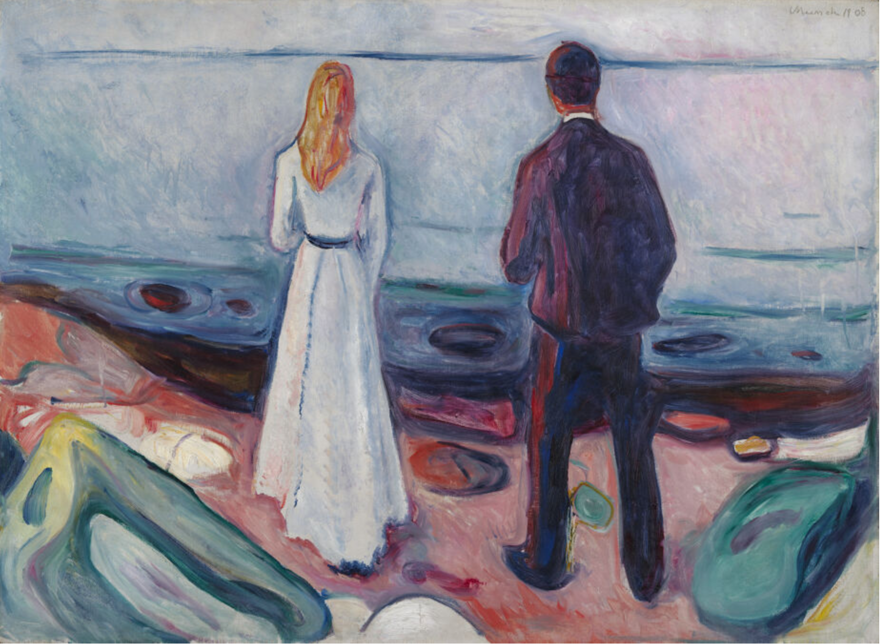

MonoMuse is a contemporary museum dedicated to exploring the intersection of art, technology, and human creativity. Through immersive exhibitions, interactive installations, and rotating collections, MonoMuse invites visitors to discover how digital innovation is transforming the way we create, experience, and understand art.
At MonoMuse, visitors can experience artist talks, educational programming, and interactive gallery moments that make each visit feel engaging and accessible. Our museum is designed to encourage curiosity, reflection, and a deeper appreciation for how innovation shapes artistic expression and public culture.
About MonoMuse
The MonoMuse Museum of Art collects, studies, conserves, and presents significant works of art across time and cultures in order to connect all people to creativity, knowledge, ideas, and one another.
MonoMuse fosters exploratory thinking about art and technology, offering visitors a place to encounter contemporary ideas through exhibitions, installations, and public programs. The museum brings together creative work that reflects the evolving relationship between innovation, culture, and human expression.
Through interpretation, education, and access to dynamic exhibitions, MonoMuse encourages visitors to consider how art connects to the defining questions of the present. The museum serves as both a cultural destination and a space for curiosity, inviting audiences to look closely, think critically, and discover new perspectives.

Location and Hours

1000 Fifth Avenue, Pittsburgh, PA
View on Map◷ The museum is open 10am–5pm
Current Exhibitions

Current
Critical Printing
January 24, 2026-May 10, 2026
With its unexpected juxtapositions among little-known prints, this installation is designed to generate experimental thinking and invite visitors into new ways of seeing and understanding printmaking.
Current
Edvard Munch: Technically Speaking
January 18, 2026-May 10, 2026
Visitors are invited to explore Munch’s artistic process, uncovering his playful approach and fascination with materiality through works that reveal his technical experimentation and expressive range.
